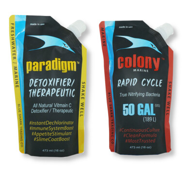

Begin the biological foundation and watch core water signals.

Official Beginner Cycle Journey
Build a strong foundation. Grow a thriving reef.
Follow the Blue Shark Cycle with AquoraX keeping the experience simple, calm and easy to understand.
The Blue Shark Cycle
Your reef foundation, step by step.
Support beneficial bacteria while the tank starts to settle.
Look for stable patterns before adding more sensitive livestock.
Build confidence, colour and long term rhythm.

Powered by Colony
Rapid Cycle Support
Colony helps support the biological foundation of a new reef by introducing nitrifying bacteria.
Foundation supportBeginner friendlyCycle guidance
Protected by Paradigm
Aquarium Protection
Paradigm is presented as a supportive protection step, helping beginners focus on stability and observation.
Watch calmlySupport stabilityReef confidence
Official Retail Partner
Shop authentic Blue Shark / ATM cycle products through Finest Aquatics.
Rapid Cycle Guide
Watch nowColony · How It Works
Watch nowATM Products Playlist
Open playlistBlue Shark Channel
Visit channelAquoraX monitors. You enjoy.
Simple guidance while your reef finds its rhythm.
Beginner Mode keeps the focus on stability, calm observation and safe next steps.
Water TestsTrack simple trendsLivestockWatch coral & fishAquoraX CamBefore/current compareAsk AquoraXCalm reef helper
Beginner Home
Your reef at a glance.
A calm overview of today’s reef, focused on simple signals instead of overwhelming numbers.
Keep logging simple water tests to build a clearer picture.
Your reef foundation is being built. Look for steady trends.
Add coral and fish records when you are ready to track growth.
Livestock Tracker
Coral and fish records, kept simple.
Track what you have, how it looks, and changes over time.
Coral Tracker
Growth, colour, placement and notes.
Fish Tracker
Behaviour, feeding, condition and journal notes.
AquoraX Cam
Before and current photo comparison.
Take a photo on mobile or upload from gallery. Desktop browsers usually open the file picker.
Before Photo
No photo yet
Current Photo
No photo yet
Growth / condition
Beginner Tests
Understand what you test and why it matters.
Beginner Mode explains signals without panic language or dosing pressure.
Important during early cycling. Watch and retest calmly.
A cycle signal that helps show biological progress.
A trend to monitor as the reef becomes more established.
Ask AquoraX
Your calm reef companion.
Choose a guidance card. AquoraX will help you review, watch and consider next checks.
Guidance will stay beginner-safe: review trends, watch behaviour, consider checking recent tests, and focus on stability.
Settings
Mode and experience controls.
UX Lab placeholder for Beginner / Experienced switching before production merge.